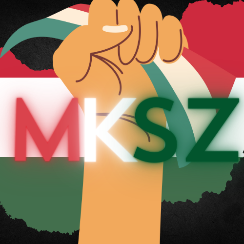

Nagyobb változtatások
-Az adventi kalendár csatorna eltávolítása!
-A spam,reverse csatorna törlésre kerül mivel nem olyan sokan használták!
-Az MKSZ bot visszatér Hamarosan!!
-Új március.15 szerver név,logo és esemény!
Kisebb változtatások
-Limitált rangok!
-Art csatorna törlésre kerül!
A legnagyobb hír visszatér...... az MKSZ RÁDIÓ!
HAMAROSAN